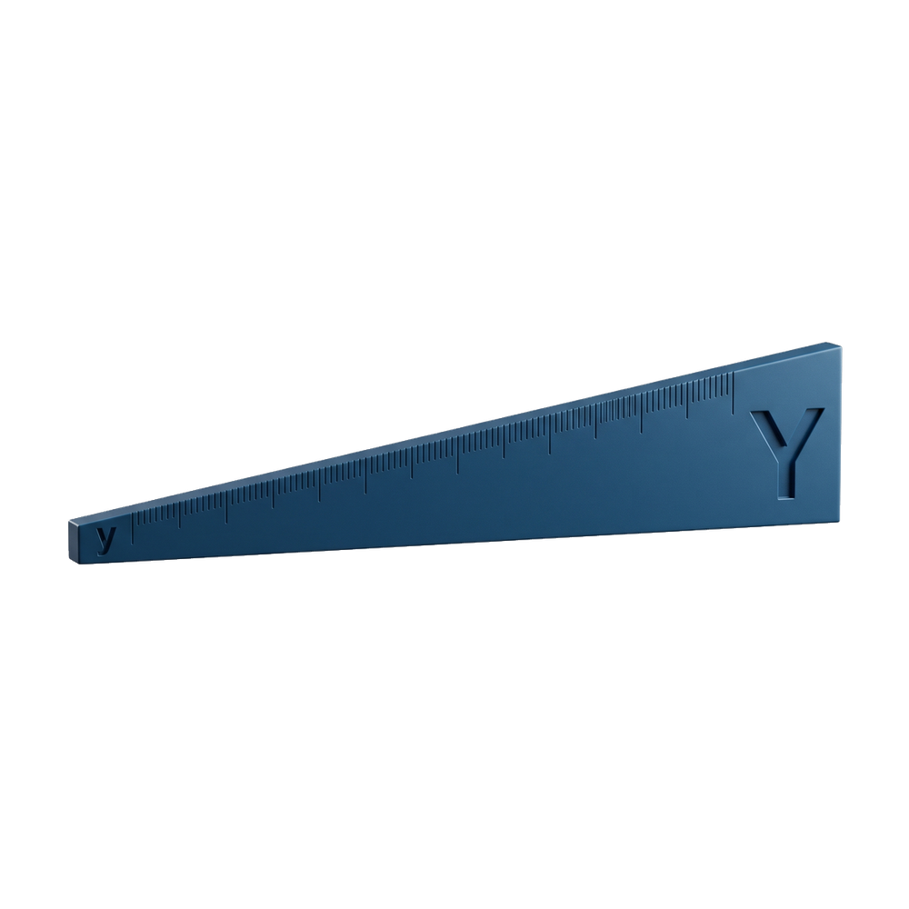
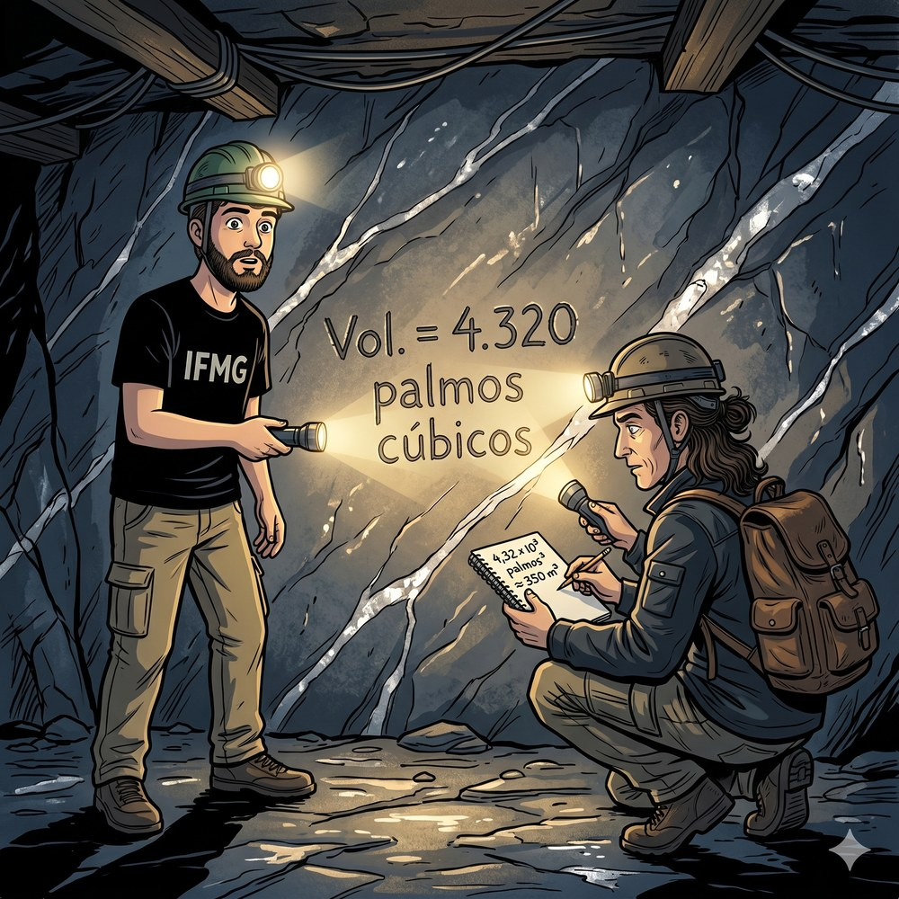
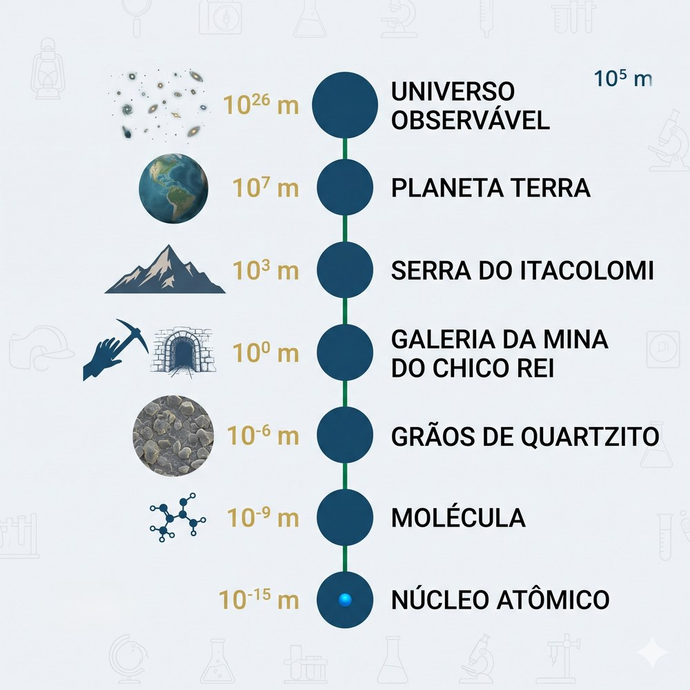
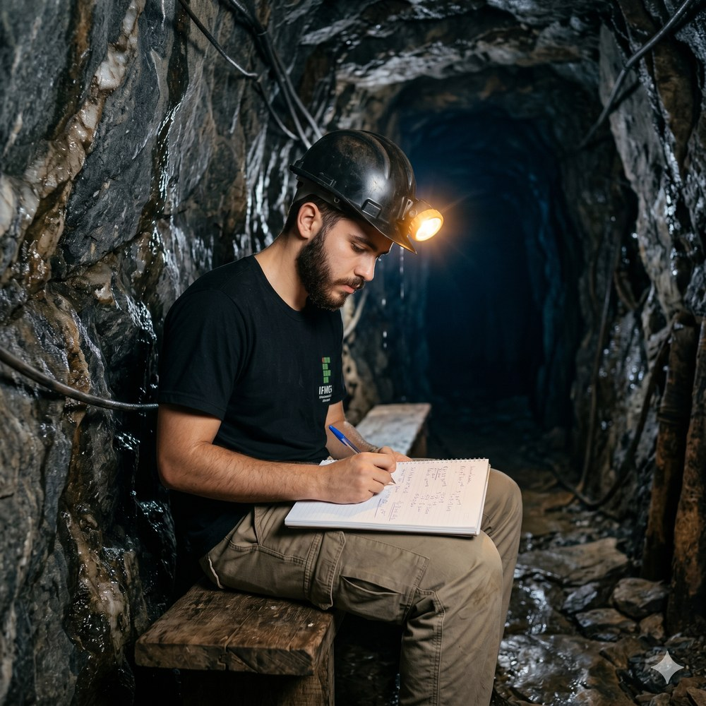
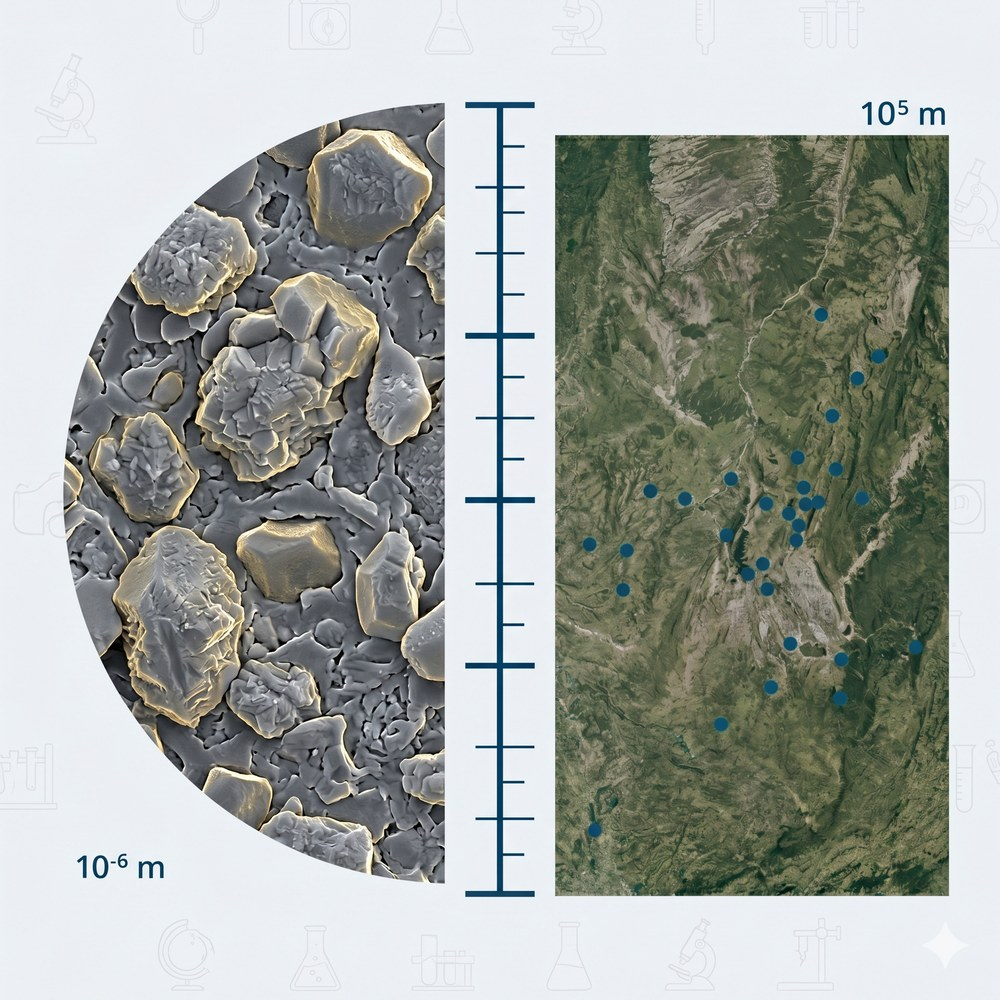
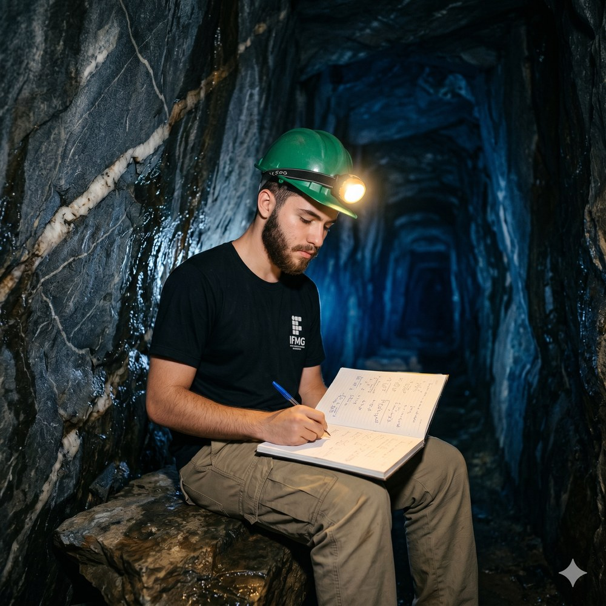
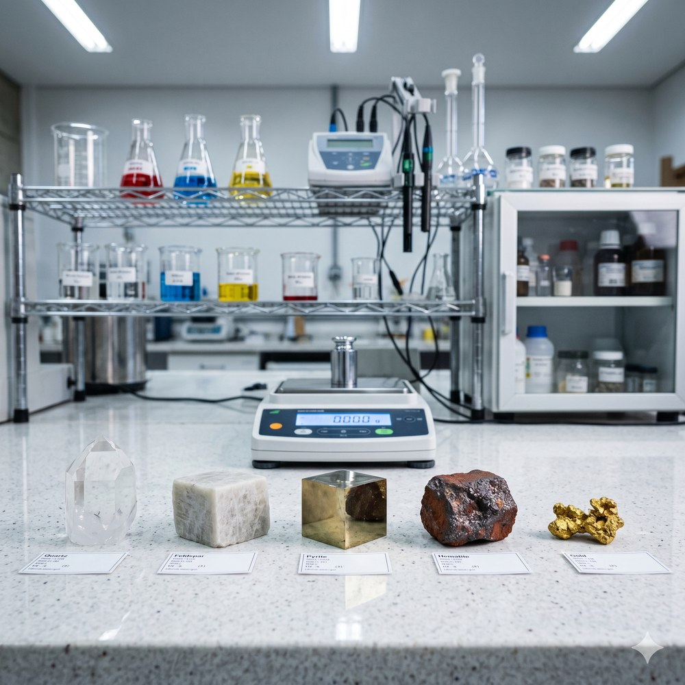
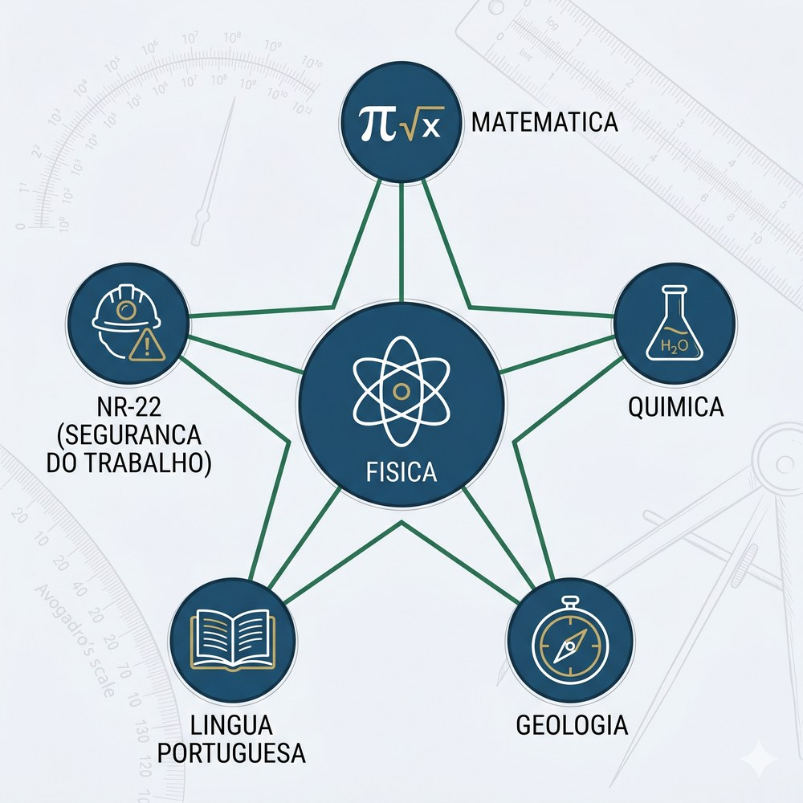
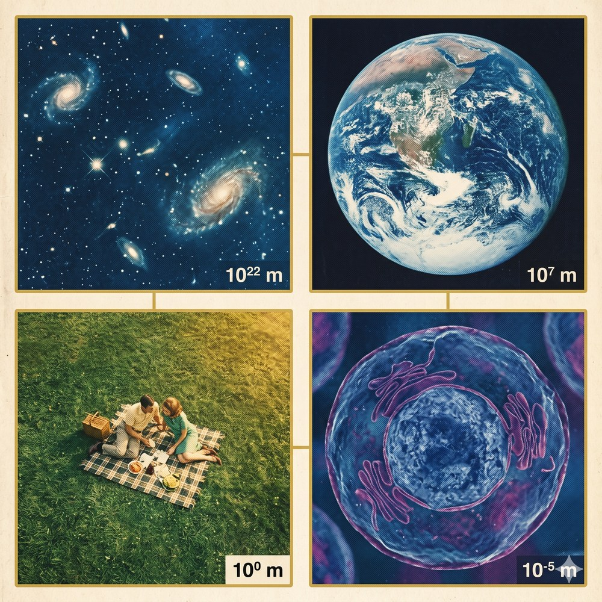

“O universo é um grande livro escrito em linguagem matemática, e seus caracteres são triângulos, círculos e outras figuras geométricas.”
A Rua Dom Silvério começa quase sem aviso, numa saída lateral da Praça Antônio Dias que a maioria dos turistas não percebe. Pedro a notou porque havia estudado a rota com antecedência: saindo da Praça Tiradentes, descendo em direção ao bairro Antônio Dias e tomando a Rua do Aleijadinho — uns duzentos e cinquenta metros de ladeira estreita e sinuosa, com o cheiro de café escapando dos sobrados e o eco dos passos no calçamento colonial —, desembocando na Praça Antônio Dias à sombra da Igreja de Nossa Senhora da Conceição e virando à direita na Rua Dom Silvério. Outros cem metros de pedras molhadas, e o portão colonial de ferro da Mina do Chico Rei aparecia no número 108, aberto, como se esperasse por ele.
Era uma tarde de outono. O sol já não tinha força suficiente para aquecer o calçamento, mas ainda tinha luz suficiente para tornar os casarões do bairro Antônio Dias quase teatrais — as paredes brancas pegando ouro, as janelas de gelosia projetando sombras geométricas no chão. Pedro ajustou a mochila do IFMG no ombro e acendeu a lanterna antes mesmo de cruzar o portão. O Prof. Julio havia recomendado: a galeria principal tinha teto alto e iluminação nos primeiros 325 metros, mas nas galerias laterais o teto baixava e havia trechos onde era preciso se agachar. A temperatura interna girava em torno de 18 °C e, fora do trecho iluminado, a escuridão era total.
O Prof. Julio já estava dentro, esperando. Pedro o reconheceu pelo cabelo cacheado preso e pela mochila de couro desgastado que o professor carregava desde antes da pandemia. Mas o que Pedro notou primeiro foi a expressão no rosto do Prof. Julio — não de professor em sala de aula, mas de alguém que estava num lugar de que genuinamente gostava.
— Bem-vindo ao século XVIII — disse ele, sem mais preâmbulo.
A mudança foi imediata. No instante em que Pedro entrou na galeria, o mundo de fora desapareceu. A temperatura caiu uns oito graus. O cheiro da rua — café, pedra quente, escapamento de carro — foi substituído por algo mais denso: terra molhada, minerais, tempo acumulado. As paredes de quartzito cinza-escuro estavam úmidas ao toque, cobertas de um brilho mineral que a lanterna de Pedro desdobrava em pontos de luz — veios de quartzo branco cortando a rocha em diagonais precisas, como costuras de cristal feitas por dentro.
Naquela galeria lateral, o teto forçava os dois a caminharem levemente curvados. O eco dos passos redobrava no corredor estreito. O gotejamento constante de água pelas fissuras da rocha criava um ritmo baixo e regular que Pedro, depois de alguns segundos, começou a ouvir como se fosse música — ou como se fosse a respiração da própria montanha.
— Olha isso. — Pedro aproximou a lanterna de uma seção da parede onde uma inscrição sobrevivera ao tempo, quase absorvida pelo quartzito mas ainda legível: Vol. = 4.320 palmos cúbicos.
— Engenharia colonial, século XVIII. — O Prof. Julio se agachou para ver melhor, a lanterna do professor iluminando a gravura de baixo para cima, ampliando cada irregularidade da rocha ao redor das letras. — Os engenheiros de minas estimavam o volume de cada galeria para calcular o rendimento esperado de ouro. Era cálculo real, com instrumentos reais — só que em unidades que a maioria das pessoas não usa mais.
Pedro ficou olhando para o número. 4.320. Simples de ler. Mas quanto era um palmo cúbico? Quantos metros cúbicos cabiam em 4.320 deles? Ele não sabia — e percebeu que sem conhecer a unidade, o número era um símbolo vazio. Três séculos de história gravados em pedra, e sem o contexto metrológico ele não conseguia extrair nada além de uma sequência de algarismos.
O Prof. Julio tirou um bloco de papel da mochila e escreveu ao lado da inscrição, segurando o papel perto da parede para que Pedro pudesse comparar os dois: 4,32 × 103 palmos3 ≈ 350 m3.
— Dois formatos para o mesmo volume — disse ele. — Qual você prefere?
— O da pedra é mais fácil de ler num relance. — Pedro considerou. — Mas o do papel diz quanto é de verdade. Trezentos e cinquenta metros cúbicos de rocha escavada à mão. — Ele fez uma pausa, sentindo o peso real disso. — Isso é enorme.

Mais adiante na galeria, uma pequena bancada de madeira havia sido instalada pela equipe de museologia. Sobre ela, uma ficha plastificada com os dados técnicos da mina. Pedro a leu em voz alta:
— Reserva histórica estimada: dois bilhões trezentos e quarenta e sete milhões oitocentos e vinte e três mil quatrocentas e doze toneladas de minério.
Levou quinze segundos. E no final, não tinha certeza se havia lido certo.
O Prof. Julio pegou o bloco e escreveu: 2,348 × 109 t.
Pedro olhou para o papel. Dois segundos. Dois ponto três bilhões de toneladas. Ordem de grandeza imediata, sem contar zeros, sem perder o fio no meio da leitura.
— Mas tem um detalhe — disse o Prof. Julio, apontando de volta para a ficha plastificada. — Você disse que não conseguia saber a ordem de grandeza antes de terminar de ler o número por extenso. Isso é o coração do problema. Na mineração, um número sem ordem de grandeza clara é um número perigoso. Você pode pedir caminhões para mover dez vezes mais material do que o necessário — ou dez vezes menos. A notação científica não é estética. É protocolo de segurança.
Pedro olhou de volta para a inscrição na parede. Vol. = 4.320 palmos cúbicos. Três séculos separavam aquela gravação do papel do Prof. Julio. A intenção era a mesma: compactar um número para que pudesse ser lido, comparado e comunicado sem ambiguidade. Os engenheiros coloniais não tinham notação científica — mas a necessidade que criou a notação científica já estava lá, gravada em quartzito, esperando que alguém a nomeasse corretamente.
A galeria seguia em frente, mais escura, mais fria, mais funda. Pedro ajustou a lanterna no capacete que o guia havia emprestado na entrada e começou a caminhar.
A Mina do Chico Rei existe exatamente como descrita — o portão colonial de ferro, as 175 galerias de quartzito distribuídas em cinco níveis e os 325 metros iluminados são reais, na Rua Dom Silvério, 108, bairro Antônio Dias, a cerca de 600 metros a pé da Praça Tiradentes.
No Street View da Rua Dom Silvério, você vai ver o portão histórico de ferro da mina enquadrado entre dois casarões coloniais brancos de janelas com gelosia — o mesmo quarteirão onde Chico Rei comprou sua liberdade no século XVIII.
Os números gravados nessas paredes são os ancestrais diretos da notação científica que você vai usar ao longo de todo o curso técnico.

Por volta de 250 a.C., o matemático grego Arquimedes escreveu A Arenária (Psammites), um texto em que estimou o número de grãos de areia necessários para encher o universo então conhecido. Para expressar números que chegavam a 1063, Arquimedes criou um sistema de ordens de magnitude — antecessor direto das potências de 10 que usamos hoje. Quase dois milênios depois, René Descartes formalizou a notação de expoentes no século XVII, e a linguagem das potências de 10 tornou-se padrão internacional. Em Minas Gerais colonial, engenheiros de minas estimavam volumes de ouro em grandezas que escapavam à escala cotidiana — sem o formalismo de Descartes, mas com a mesma necessidade urgente de lidar com números impossíveis de ler por extenso sem perder o fio.
Uma potência de 10 é uma expressão da forma 10n, onde n é um número inteiro chamado expoente. Para n positivo, o expoente indica quantas vezes 10 é multiplicado por si mesmo; para n negativo, quantas vezes é dividido. Por definição algébrica, 100 = 1. A notação científica padrão representa qualquer número real na forma N = a × 10n, com 1 ≤ a < 10 e n inteiro. A escala das potências de 10 abrange toda a física conhecida: do raio do próton (≈ 10−15 m) ao diâmetro do universo observável (≈ 1026 m) — uma amplitude de 41 ordens de grandeza. A distinção essencial é que uma escala linear cresce por adição (0, 10, 20, 30…), enquanto uma escala logarítmica cresce por multiplicação (1, 10, 100, 1 000…) — e esta última comprime o universo inteiro em aproximadamente 41 casas.
Na rotina de uma mina, o técnico em mineração lida com grandezas que variam por muitas ordens de magnitude num mesmo turno: o diâmetro de uma partícula de ouro recuperável pode ser da ordem de micrômetros (10−6 m), enquanto a extensão de uma frente de lavra pode atingir centenas de metros (102 m). A NR-22 (Norma Regulamentadora de Mineração) exige que medições de escavação, drenagem e controle de poeira sejam registradas com a unidade correta e o número de algarismos significativos adequado — o que implica dominar a escala logarítmica e a notação científica como competências de segurança, não apenas de conveniência matemática.
A Escada dos Expoentes.
Pedro registrou a série no bloco, usando a lanterna do capacete como fonte de luz enquanto o Prof. Julio ditava e comentava cada linha:
| Símbolo | Grandeza | Unidade |
|---|---|---|
| N | Número em notação científica | qualquer grandeza física |
| a | Coeficiente (mantissa) | 1 ≤ a < 10 |
| n | Expoente inteiro de base 10 | adimensional |
| Potência | Leitura | Valor numérico |
|---|---|---|
| 10−6 | um milionésimo | 0,000 001 |
| 10−3 | um milésimo | 0,001 |
| 100 | um | 1 |
| 103 | mil | 1 000 |
| 106 | um milhão | 1 000 000 |
| 109 | um bilhão | 1 000 000 000 |
| 1012 | um trilhão | 1 000 000 000 000 |
— Os dois números que você calculou da ficha da mina — disse o Prof. Julio, apontando para o bloco de Pedro — estão separados por quanto na escala logarítmica?
Pedro examinou o que havia anotado. 2,348 × 109 toneladas de reserva. 3,5 × 102 metros cúbicos de galeria. Sete ordens de grandeza. Sete degraus nessa escada. A mesma mina, dois números completamente diferentes em escala — e a notação científica tornava a diferença óbvia de um único olhar para os expoentes. Nenhuma contagem de zeros necessária.

Em 1614, o matemático escocês John Napier publicou Mirifici Logarithmorum Canonis Descriptio, inventando os logaritmos a partir de uma observação prática: multiplicar números grandes é equivalente a somar seus logaritmos, o que reduzia horas de cálculo manual a minutos. Pierre-Simon Laplace, que usou logaritmos extensivamente em mecânica celeste, declarou que a invenção de Napier havia “dobrado a vida dos astrônomos ao reduzir pela metade o trabalho de cálculo”. As regras de operação com notação científica — somar expoentes para multiplicar, subtrair para dividir — são a versão moderna e destilada dessa mesma descoberta. Napier não tinha computador; tinha a propriedade dos expoentes. E isso foi suficiente.
A elegância das operações com potências de 10 decorre diretamente das propriedades dos expoentes. Multiplicação de potências de mesma base equivale à soma dos expoentes: 10m × 10n = 10m+n. Divisão equivale à subtração: 10m ÷ 10n = 10m−n. Isso significa que, ao operar em notação científica, os coeficientes a e b são tratados separadamente dos expoentes — e o resultado é renormalizado para a forma padrão quando necessário. A notação científica funciona, assim, como um sistema anti-erro embutido: ao isolar a ordem de grandeza no expoente, torna imediatamente visível quando um resultado é fisicamente plausível ou absurdo — antes mesmo de checar o cálculo.
Um erro frequente em engenharia de minas é o “erro de dígito” — um zero a mais ou a menos numa planilha de volume ou massa que multiplica ou divide o resultado por 10, inviabilizando ou superestimando o projeto. Com notação científica, esse erro se torna detectável na inspeção visual: a ordem de grandeza está explícita no expoente, e uma mudança de 106 para 107 é percebida imediatamente. Projetos de lavra envolvem multiplicações de área (m²) por espessura da camada (m) por densidade (kg/m³) — três grandezas em ordens de grandeza distintas, manipuláveis de forma confiável somente quando organizadas em notação científica.
As Regras de Ouro do Cálculo.
Pedro escreveu os dois casos principais usando dados reais da mina como exemplos concretos, com o Prof. Julio ditando e verificando cada linha:
| Símbolo | Grandeza | Unidade |
|---|---|---|
| a, b | Coeficientes | adimensionais |
| m, n | Expoentes inteiros | adimensionais |
| m+n | Soma dos expoentes | expoente do resultado |
| Símbolo | Grandeza | Unidade |
|---|---|---|
| a, b | Coeficientes | adimensionais |
| m, n | Expoentes inteiros | adimensionais |
| m−n | Diferença dos expoentes | expoente do resultado |
— Quinze gramas de ouro por tonelada de rocha — disse Pedro, olhando para o resultado com a expressão de quem acabara de ver um número se transformar em realidade. — Pra extrair 1 kg de ouro, você tritura 67 toneladas de pedra. E faz esse cálculo em notação científica porque se escrever todos os zeros, você conta errado na hora da pressão.
— Agora você está raciocinando como um técnico — disse o Prof. Julio.

As maiores reservas de minério de ferro do mundo estão concentradas no Quadrilátero Ferrífero de Minas Gerais — estimadas em 6,8 × 1010 toneladas de hematita e itabirito. O Quadrilátero se formou há cerca de 2,5 × 109 anos, durante o Arqueano, quando processos hidrotermais depositaram ferro em camadas intercaladas com quartzo e xisto sob pressões e temperaturas inimagináveis à escala humana. Em termos de tempo absoluto, 2,5 bilhões de anos equivalem a aproximadamente 7,9 × 1016 segundos — um número que, escrito por extenso, exigiria 17 algarismos e tornaria qualquer comparação instantânea impossível sem notação científica como mediadora.
A produção mineral envolve grandezas nos dois extremos do espectro numérico. No extremo pequeno: o número de Avogadro (6,022 × 1023 átomos por mol) permite calcular que 1 grama de ouro (Au, massa molar 197 g/mol) contém 3,06 × 1021 átomos. No extremo grande: a reserva mundial estimada de ouro é de aproximadamente 1,73 × 105 toneladas, e a produção anual brasileira de minério de ferro está na ordem de 4,0 × 108 toneladas por ano. O número de Avogadro e a reserva de ferro do Quadrilátero diferem por 13 ordens de grandeza — uma diferença que só se torna comparável quando ambos os números estão escritos em notação científica e os expoentes podem ser subtraídos diretamente.
O planejamento de uma mina começa com a modelagem de reservas: a estimativa de quanto minério pode ser extraído economicamente. Essa modelagem usa softwares de geoestatística que operam com volumes na ordem de 106 a 109 m³ e massas na ordem de 109 a 1012 kg. Uma frota de caminhões das grandes minas do Quadrilátero carrega entre 2,0 × 101 t (modelos menores) e 3,5 × 102 t (gigantes como o Caterpillar 797F). Comunicar qualquer dado de capacidade operacional de uma mina de grande porte — para um relatório técnico, uma licitação ou uma inspeção da NR-22 — exige invariavelmente notação científica como linguagem comum.
A Régua da Produção Mineral.
| Grandeza | Extenso | Not. científica |
|---|---|---|
| Reserva de Fe (QF) | 68 bi t | 6,8 × 1010 t |
| Prod. anual Fe (Brasil) | 400 mi t | 4,0 × 108 t/a |
| Reserva mundial Au | 173 000 t | 1,73 × 105 t |
| Prod. anual Au (Brasil) | 85 t | 8,5 × 101 t/a |
| Átomos em 1 g de Au | — | 3,06 × 1021 |
| N. de Avogadro | — | 6,02 × 1023 mol−1 |
| Idade do QF | 2,5 bi a | 2,5 × 109 a |
| Idade do QF (seg.) | — | 7,9 × 1016 s |
| Caminhão pequeno | 20 t | 2,0 × 101 t |
| Caminhão Cat 797F | 350 t | 3,5 × 102 t |
Pedro olhou para a tabela e ficou em silêncio por um momento. O número de átomos em 1 grama de ouro era 3,06 × 1021. A reserva de ferro do Quadrilátero era 6,8 × 1010. Qual era maior? Com os números por extenso, a resposta exigiria contar zeros. Com notação científica, bastava comparar os expoentes: 21 contra 10. A resposta era imediata — e, mais importante, confiável.
— Um número que você não consegue comparar é um número que não te serve — disse o Prof. Julio, fechando o bloco. — Na engenharia, tempo gasto contando zeros é tempo roubado de pensar no problema real.

A calculadora científica portátil — a HP-35, lançada em 1972 — foi o primeiro instrumento de bolso capaz de operar diretamente em notação científica, com teclas dedicadas ao expoente de 10. Antes dela, geólogos e engenheiros de minas usavam réguas de cálculo e tábuas logarítmicas para multiplicar e dividir grandes números em campo — ferramentas que dependiam do mesmo princípio dos expoentes, mas exigiam treino e paciência consideráveis. A HP-35 revolucionou o trabalho de prospecção mineral ao permitir calcular volumes, concentrações e reservas em segundos, com o expoente visível no visor. Seu preço de lançamento era US$ 395 (equivalente a cerca de R$ 12.000 em 2026) — um investimento que se pagava em dias de erros de cálculo evitados.
As operações com notação científica seguem regras derivadas das propriedades dos expoentes. A adição e a subtração exigem que os expoentes sejam iguais antes de operar os coeficientes — etapa que demanda atenção e é a fonte mais comum de erro para iniciantes. A multiplicação e a divisão são as mais diretas: coeficientes operam entre si, expoentes somam ou subtraem. A potenciação eleva tanto o coeficiente quanto o expoente: (a × 10n)p = ap × 10n·p. A radiciação inverte o processo: n√(a × 10m) = n√a × 10m/n — com a ressalva que quando o expoente m não é divisível pelo índice n, é necessário ajustar o expoente antes de extrair a raiz, convertendo para uma potência conveniente.
Um técnico em mineração executa, num mesmo turno, grandezas que envolvem todas as cinco operações: massa total de minério de uma pilha (multiplicação de volume por densidade), concentração de elemento traço numa amostra (divisão de massas), volume total de rejeitos de duas barragens somadas (adição), área de uma frente de lavra quadrada a partir do lado (potenciação) e diâmetro de partícula a partir de área projetada em microscópio (radiciação). Quando os valores envolvem ordens de grandeza distintas — como invariavelmente ocorre na mineração — todas essas operações são executadas de forma segura e rastreável somente em notação científica.
As Cinco Operações.
Pedro assumiu o bloco e escreveu os casos sistematicamente, um a um, com exemplos de dados reais da mineração.
| Símbolo | Grandeza | Unidade |
|---|---|---|
| a, b | Coeficientes (expoentes iguais) | adimensionais |
| n | Expoente comum | igualar antes de operar |
| Símbolo | Grandeza | Unidade |
|---|---|---|
| a × b | Produto dos coeficientes | renormalizar se ≥ 10 |
| m + n | Soma dos expoentes | expoente do resultado |
| Símbolo | Grandeza | Unidade |
|---|---|---|
| a ÷ b | Quociente dos coeficientes | renormalizar se < 1 |
| m − n | Diferença dos expoentes | expoente do resultado |
| Símbolo | Grandeza | Unidade |
|---|---|---|
| ap | Coeficiente elevado a p | calcular separadamente |
| n · p | Expoente multiplicado | expoente do resultado |
| Símbolo | Grandeza | Unidade |
|---|---|---|
| n√a | Raiz do coeficiente | calcular separadamente |
| m/n | Expoente dividido | ajustar se não inteiro |
| Operação | Coeficientes | Expoentes | Atenção |
|---|---|---|---|
| Adição / Subtração | somam ou subtraem | mantém o do maior | igualar expoentes |
| Multiplicação | multiplicam | somam | renormalizar |
| Divisão | dividem | subtraem | renormalizar |
| Potenciação | elevam a p | multiplicam por p | calcular ap |
| Radiciação | extraem a raiz | dividem por n | ajustar exp. ímpar |
— Esse quadro vai para o seu capacete — disse o Prof. Julio, meio a brincar, meio a sério. — No primeiro mês de estágio, você vai precisar disso mais do que imagina.

Arquimedes de Siracusa (287–212 a.C.) descobriu o princípio do empuxo enquanto investigava uma encomenda do rei Hierão II: uma coroa de ouro supostamente adulterada com prata. Sem destruir a coroa, Arquimedes usou a diferença de densidade entre ouro (19 300 kg/m³) e prata (10 490 kg/m³) para detectar a fraude comparando o volume de água deslocada pela coroa com o volume deslocado por uma peça de ouro puro de mesma massa. Em Ouro Preto colonial, a mesma lógica física foi mobilizada para distinguir ouro verdadeiro da pirita — o “ouro de tolo” —, que enganou garimpeiros iniciantes por décadas: a pirita brilha como ouro, mas tem densidade de apenas 5 000 kg/m³, menos de um terço do ouro puro. A densidade era, em essência, a identidade forense do mineral.
A densidade é definida como a razão entre a massa e o volume de um material: ρ = m/V. A unidade padrão no SI é o quilograma por metro cúbico (kg/m³). As densidades dos minerais variam por mais de uma ordem de grandeza: de 2,65 × 103 kg/m³ (quartzo) a 19,3 × 103 kg/m³ (ouro puro) — uma variação de fator 7,3 dentro de materiais que podem estar lado a lado na mesma amostra de rocha. Em geologia e mineração, a densidade é o elo de conversão entre grandezas geométricas (volume, obtido por levantamento das galerias) e grandezas de massa (tonelagem, necessária para calcular rendimento econômico).
O cálculo de tonelagem de lavra — a massa total de minério que pode ser extraído de uma reserva — é a operação econômica mais fundamental num plano de mineração. A fórmula é simples: massa = volume × densidade aparente. Mas os números envolvidos são invariavelmente grandes: volumes na ordem de 103 a 106 m³, densidades na ordem de 103 kg/m³, massas resultantes na ordem de 106 a 109 kg. Um erro de uma ordem de grandeza nesse cálculo pode inviabilizar um projeto inteiro ou gerar um superestoque de equipamentos com custo na ordem de milhões de reais.
A Impressão Digital dos Minerais.
O Prof. Julio havia trazido quatro amostras na mochila — pequenas, mas com massas medidas no laboratório antes da saída. Na bancada improvisada sobre uma pedra plana da galeria, Pedro calculou a densidade de cada uma.
| Símbolo | Grandeza | Unidade |
|---|---|---|
| ρ (rho) | Densidade | kg/m³ |
| m | Massa | kg |
| V | Volume | m³ |
| Mineral | Dens. (kg/m³) | Not. cient. | Papel |
|---|---|---|---|
| Quartzo | 2 650 | 2,65 × 103 | ganga |
| Feldspato | 2 560 | 2,56 × 103 | ganga |
| Pirita | 5 000 | 5,0 × 103 | ouro de tolo |
| Hematita | 5 260 | 5,26 × 103 | minério de Fe |
| Ouro | 19 300 | 19,3 × 103 | metal precioso |
Problema aplicado — tonelagem de lavra.
Uma pilha de quartzito fragmentado ocupa um volume aparente de 6,83 × 102 m³. A densidade aparente (incluindo vazios entre fragmentos) é de 2,60 × 103 kg/m³. Qual a massa total da pilha?
| Símbolo | Grandeza | Valor |
|---|---|---|
| m | Massa total da pilha | kg |
| ρ | Densidade aparente | 2,60 × 103 kg/m³ |
| V | Volume da pilha | 6,83 × 102 m³ |
— Mil e oitocentas toneladas — disse Pedro, olhando para o número como se visse pela primeira vez o peso real do que havia embaixo dos seus pés. — E essa pilha está aqui embaixo, esperando para ser extraída. Mas agora eu sei quanto ela pesa. Não é um número impossível de imaginar — é uma tonelagem real, calculável, que cabe num relatório técnico sem ocupar uma linha inteira.
O Prof. Julio sorriu e apagou a lanterna por um segundo. No escuro absoluto da galeria, o silêncio era completo — exceto pelo gotejamento constante de água nas paredes de quartzito, o mesmo ritmo que os garimpeiros do século XVIII ouviram enquanto escavavam esses corredores à pena e martelo, centímetro por centímetro, tonelada por tonelada. Depois ele reacendeu a lanterna.
— Quando você sair daqui — disse ele — vai ver a luz do sol com outros olhos.
Pedro pensou. Ela percorreu 1,5 × 1011 metros para chegar até mim.
— Isso — confirmou o Prof. Julio, sem que Pedro precisasse falar em voz alta. — E agora você consegue dizer isso em dois segundos. E todo mundo que ouvir vai entender de imediato a ordem de grandeza. É disso que se trata.
Pedro saiu pela entrada da Mina do Chico Rei e ficou parado por um instante no batente do portão, a um passo entre o escuro da galeria e a luz da tarde. A Rua Dom Silvério estava tão dourada quanto ele havia deixado — ou talvez mais, com o sol já inclinado atrás das colinas e os casarões coloniais capturando a luz nos beirais de madeira e nas janelas de gelosia fechadas.
Ele respirou fundo. O ar da rua cheirava a pedra quente e café, depois de quase uma hora no universo mineral da galeria. Eram dois mundos a menos de um metro de distância um do outro.
Dentro, na parede de quartzito, continuava gravada: Vol. = 4.320 palmos cúbicos. O engenheiro colonial que a fez não tinha notação científica, não sabia quem era John Napier, não havia lido Descartes. Mas havia feito o que qualquer engenheiro faz diante de um número grande: compactou-o numa forma que pudesse ser lida, comparada e comunicada. 4.320 palmos3 era a versão colonial de 4,32 × 103 palmos3. A necessidade era a mesma. A ferramenta ainda estava sendo aperfeiçoada.
Pedro pensou nas dez equações que havia escrito naquela tarde, na ordem em que apareceram: a forma geral N = a × 10n, as regras de multiplicar e dividir expoentes, a tabela com as grandezas do Quadrilátero Ferrífero, as cinco operações sistematizadas no Quadro 3, e o cálculo de tonelagem com densidades reais. Cinco tópicos, dez equações, uma única linguagem — a notação científica como régua invisível que torna qualquer grandeza legível, comparável e transmissível.
A notação científica não surgiu para complicar a vida de estudante. Surgiu porque Arquimedes precisava contar grãos de areia, porque Napier precisava multiplicar distâncias astronômicas sem perder o dia inteiro, porque os engenheiros coloniais precisavam registrar volumes de ouro numa parede de quartzito no coração de Minas Gerais — e porque Pedro, na trilha seguinte, vai precisar dela para estimar ordens de grandeza sem calculadora, para comparar densidades com um olhar e para escrever laudos técnicos que qualquer colega de qualquer mina possa ler sem contar zeros.
Ele caminhou de volta pela Rua Dom Silvério em direção à Praça Tiradentes, com o bloco de notas na mão e a lanterna desligada no bolso. Ouro Preto fazia o que sempre fez: guardava séculos de engenharia nas pedras e esperava, com a paciência de 2,5 × 109 anos, que alguém se desse ao trabalho de lê-las.

Quando a Física se encontra com outra disciplina, o caminho até a resposta segue oito etapas — sempre as mesmas. Esse protocolo chama-se Componente 5 e é o método que técnicos de mineração usam para resolver problemas reais. Pratique-o aqui: você vai reaplicá-lo integralmente no Trabalho (TR) desta trilha.
| # | Etapa | Ação |
|---|---|---|
| 1 | Compreender | Leia o enunciado e identifique o que se pede. |
| 2 | Dados | Liste os dados fornecidos com unidades. |
| 3 | Hipóteses | Declare as simplificações assumidas. |
| 4 | Representar | Faça um diagrama, tabela ou esquema visual. |
| 5 | Equacionar | Escreva as equações que conectam os dados ao que se pede. |
| 6 | Resolver | Substitua e calcule passo a passo. |
| 7 | Verificar | Confira unidades, ordem de grandeza e coerência. |
| 8 | Responder | Responda o que foi pedido, com unidade e interpretação. |
A propriedade log10(a × 10n) ≈ n + log10(a) conecta notação científica e logaritmos diretamente. Use essa propriedade para ordenar os minerais do Quadro 4 por logaritmo de sua densidade e construir uma escala logarítmica visual. Depois, calcule a diferença logarítmica entre a densidade do ouro (19,3 × 103 kg/m³) e a da pirita (5,0 × 103 kg/m³). Essa diferença é maior ou menor que 0,5? O que isso significa na prática: seria fácil ou difícil separar esses dois minerais numa batea apenas pela diferença de densidade?
O número de Avogadro é 6,022 × 1023 átomos/mol e a massa molar do ouro é 197 g/mol. (a) Calcule quantos átomos de ouro existem num fio de 0,50 g — massa típica de uma liga de joalheria artesanal de Ouro Preto. Expresse em notação científica. (b) Se cada átomo representasse um segundo de tempo, quantos séculos esse número de átomos representaria?
A reserva de hematita no QF é de 6,8 × 1010 t e a produção anual do Brasil é de 4,0 × 108 t/ano. (a) Em notação científica, por quantos anos durariam essas reservas nesse ritmo? (b) Se o ritmo de extração aumentar 15% ao ano, as reservas durarão mais ou menos? Estime usando potências de 10 e discuta a sustentabilidade geológica.
Laudos técnicos de mineração exigem precisão numérica e clareza de linguagem. Reescreva o parágrafo abaixo substituindo todos os números por extenso pela notação científica correta, avalie se a leitura ficou mais clara e justifique: “O volume da galeria principal é de dois mil e trezentos metros cúbicos. A densidade da rocha é de dois mil e seiscentos quilogramas por metro cúbico. A massa total escavada é de cinco bilhões, novecentos e oitenta milhões de quilogramas.”
A NR-22 limita a quantidade de explosivo por detonação em galerias subterrâneas a 2,5 × 101 kg por disparo. Um projeto usa ANFO com energia de detonação de 3,7 × 106 J/kg. (a) Qual a energia máxima liberada por disparo? (b) A galeria tem volume de 8,0 × 102 m³ e o limiar de pressão segura para estruturas históricas é de 5,0 × 103 Pa. Discuta qualitativamente se o planejamento deve considerar a proximidade da mina com as edificações coloniais.
“Em cada potência de dez, um mundo diferente se revela.”

Em 1977, os designers Charles e Ray Eames produziram um curta-metragem de nove minutos que se tornou a representação visual mais célebre da notação científica: Powers of Ten. O canal oficial do Eames Office disponibilizou o filme em alta definição no YouTube — e a qualidade do HD revela detalhes que a cópia original em película escondia: a textura da pele humana em 10−5 m, a estrutura cristalina das moléculas em 10−9 m, a voragem de luz das galáxias em 1024 m.
O filme começa com um casal fazendo piquenique num parque de Chicago, visto de um metro de distância (100 m). A câmera se afasta em progressão geométrica — a cada dez segundos, o campo de visão se multiplica por dez. Em 108 m, a Terra cabe inteira na tela. Em 1026 m, galáxias se tornam poeira luminosa. O filme então retorna e mergulha na pele do homem adormecido, atravessando células, moléculas e prótons até 10−15 m.
A escolha artística dos Eames é onde Ciência e Arte se fundem: não há narrador catastrófico, não há trilha dramática — apenas o zumbido do universo e a câmera que avança, firme, uma potência de dez de cada vez. Cada enquadramento é uma equação visual: a notação científica não é explicada, ela é sentida. Pedro, ao percorrer a Mina do Chico Rei com sua lanterna, praticou o mesmo gesto: mudou de escala para enxergar o que o olho desarmado não alcança.
Assista o filme. Acesse Scales of the Universe in Powers of Ten (HD 1080p) em youtube.com/watch?v=44cv416bKP4 — nove minutos que conectam a câmera do designer à lanterna do técnico de mineração.
BONJORNO, J. R. Identidade Saraiva: Física. São Paulo: Saraiva, 2024.
MAXIMO, A. et al. Física: contexto & aplicações. São Paulo: Scipione, 2013.
TALAVEIRA, A. C. et al. Física: ensino médio, v. único. São Paulo: Nova Geração, 2005.
BLOOM, Benjamin S. (org.). O desenvolvimento de talentos na juventude. Porto Alegre: Globo, 1988.
HEWITT, Paul G. Física conceitual. 12. ed. Porto Alegre: Bookman, 2015.
NICOLELIS, Miguel. O verdadeiro criador de tudo: como o cérebro humano esculpiu o universo que conhecemos. São Paulo: Planeta, 2020.
PIAZZI, Pierluigi. Aprendendo inteligência: manual de instruções do cérebro para estudantes em geral. São Paulo: Aleph, 2008.
PIAZZI, Pierluigi. Inteligência em concursos: manual de instruções do cérebro para concurseiros e universitários. São Paulo: Aleph, 2013.